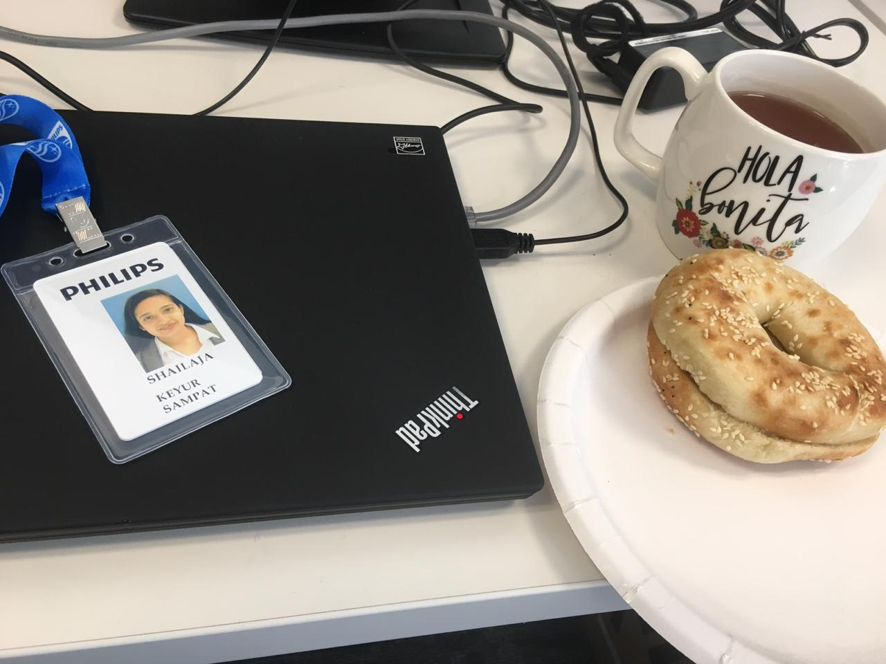

Shailaja Sampat
I am a Ph.D. student in Computer Science at Arizona State University, USA. I am conducting research in Natural Language Understanding (NLP), Computer Vision and Commonsense Reasoning domains under the guidance of Prof. Chitta Baral.I have finished my bachelors in Information and Communication Technology from Ahmedabad University, India. Along with academics, I have pursued various internships to get practical work exposure.
Feel free to say hi, if anything interesting we can talk about!
What's New? | Life is an Adventure, be the Explorer

Philips Research North America, 2019
Industrial Technology Research Institute, 2018
Industrial Technology Research Institute, 2018
Women of Color STEM Conference, 2018
MIT Entrepreneurship Bootcamp, 2016
Indian Institute of Technology- Bombay, 2016

Education & Exprience | The best way to predict your future is to create it.
Research Interests | Well, that worked!
Natural Language Processing Computer Vision Data Analytics and Visualization
Word-cloud of my research publications
Skills | Things I've picked up over the years...
(click on circles to see details, click outside circles on green region to zoomout)Non-tech Interests & Hobbies | There is no secret ingredient... It's just you.

Entrepreneurship Philosophy Language Learning Travel Cooking Fine-arts
Let's grab a cup! | Tea? Why not! Because Coffee ain't my cup of tea!
Location: BYENG 569BA (Brickyard Engineering), 699 S. Mill Ave., Tempe, Arizona 85281
Cell: +1-901-279-3904